REA로 하는 일과 먼저 알아 둘 개념
발표자는 유료 맥 앱 Vitals를 내려받아 Claude와 REA에게 작동 방식을 조사시키고, 그 결과로 자기 버전을 만들었어요. 아래 화면 왼쪽이 원본(Original · Vitals), 오른쪽이 발표자가 만든 복제본(My clone)이에요. CPU(Central Processing Unit), 메모리, 디스크 카드가 같은 자리에 있고, 색과 세부 배치만 조금 달라요.
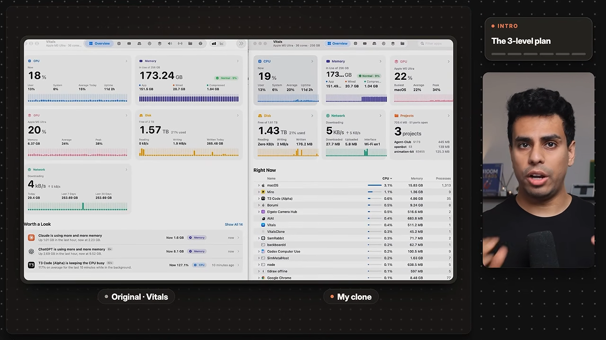
한 일은 세 단계뿐이에요. 앱을 내려받고(01), Claude와 REA가 조사하고(02), Claude가 내 버전을 만들어요(03). 슬라이드 아래의 두 체크 표시가 결과물의 성격을 말해요. 내 컴퓨터에서 돌고(Runs on my computer), 내가 필요한 기능만 담겨 있다는 거예요(The features I need). 원본에 돈을 내는 대신 이 버전을 쓰면서 계속 고칠 수 있다는 게 발표자의 말이에요.
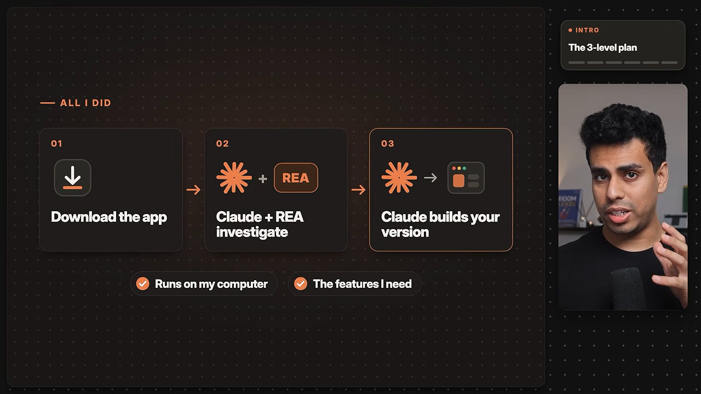
영상은 세 레벨로 진행돼요. 레벨 1은 REA가 무엇이고 무엇을 할 수 있고 없는지 이해하는 단계, 레벨 2는 실제로 앱 하나를 다시 만드는 단계, 레벨 3은 거기에 자기 색을 더해 파는 단계예요. 발표자 Samin Yasar는 Amazon과 JPMorgan에서 소프트웨어 엔지니어로 일했어요. 코드는 쓰지 않고 Claude에게 말로만 시키니 배경지식이 없어도 따라올 수 있다고 해요.
케이크 비유로 보는 기본 개념
설치에 앞서 발표자는 개념 몇 개를 케이크 비유로 풀어요. 이 비유가 영상 끝까지 이어지니 한 번에 정리해 둘게요.
| 케이크 비유 | 소프트웨어에서는 |
|---|---|
| 친구가 건네준 레시피 | 소스 코드 — 앱이 무엇을 할지 적은 지시서 |
| 몇 가지 조건을 달고 고쳐 써도 된다고 공유한 레시피 | 오픈소스. 그 조건이 라이선스예요 |
| 온라인에 올려 개선을 제안받고 예전 버전도 볼 수 있게 한 레시피 | GitHub. 프로젝트 하나가 저장소(repo)예요 |
| 레시피 없이 받은 완성된 케이크 | 소스 코드 없이 받는 완성 앱 |
| 맛보고 잘라 보며 속을 짐작하기 | 리버스 엔지니어링 |
소스 코드가 무엇인지는 아래 슬라이드가 잘 보여 줘요. 왼쪽 RecipeApp.js의 주석 세 줄이 각각 정보를 정리하는 법, 버튼을 눌렀을 때 할 일, 화면에 보여 줄 것을 적고 있고, 오른쪽이 그 코드로 만들어진 My Recipes 앱이에요.
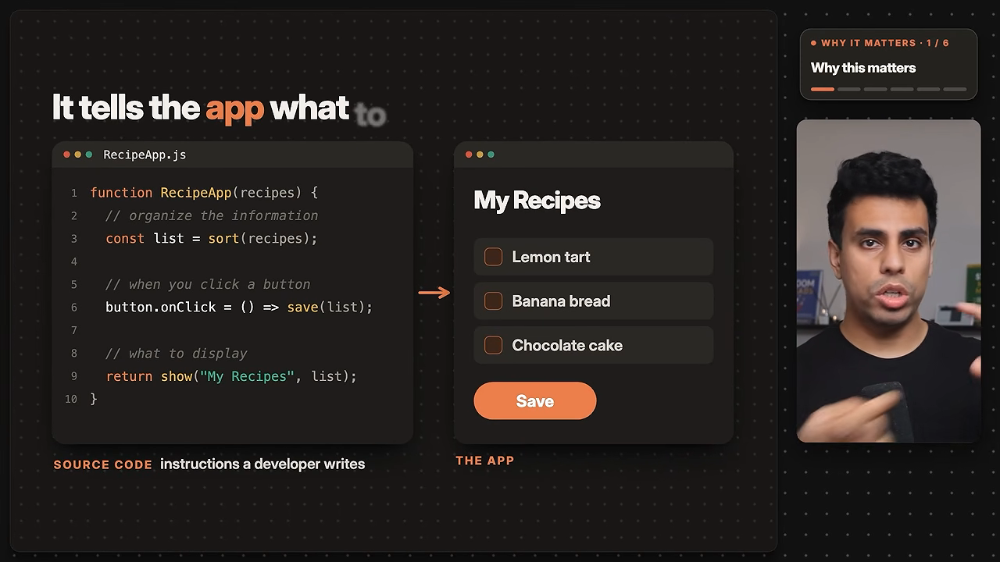
오픈소스는 레시피를 고쳐 써도 된다는 허락까지 함께 주는 거예요. 아래 슬라이드에서 친구의 레시피가 여러 갈래로 퍼지고, 그중 하나가 설탕을 줄인 '그들의 버전(Their version · Less sugar)'이에요. 코드를 읽을 수 있고, 라이선스가 쓰고 고치고 나누는 조건을 알려 줘요.
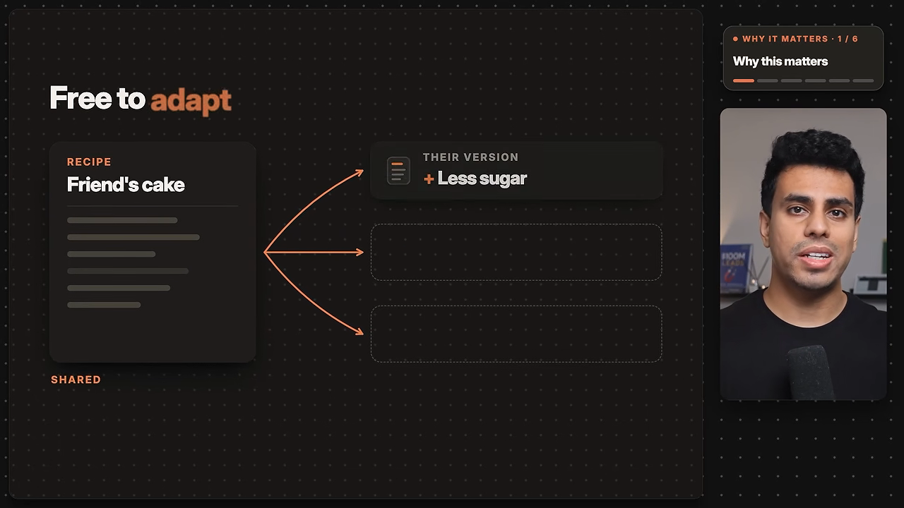
GitHub은 소프트웨어 프로젝트를 저장하고 변경을 추적하며 함께 작업하는 곳이에요. 발표자가 'REA의 GitHub 저장소'라고 하면 그 프로젝트 페이지와 파일을 말해요. README는 무엇을 하는지와 시작하는 법을 적은 설명서예요. 아래가 REA의 README 첫 화면이에요. 빨간 테두리 안 문장이 REA를 한 줄로 설명하고, 맨 아래에 설치 명령 npx rea-agents setup이 보여요.
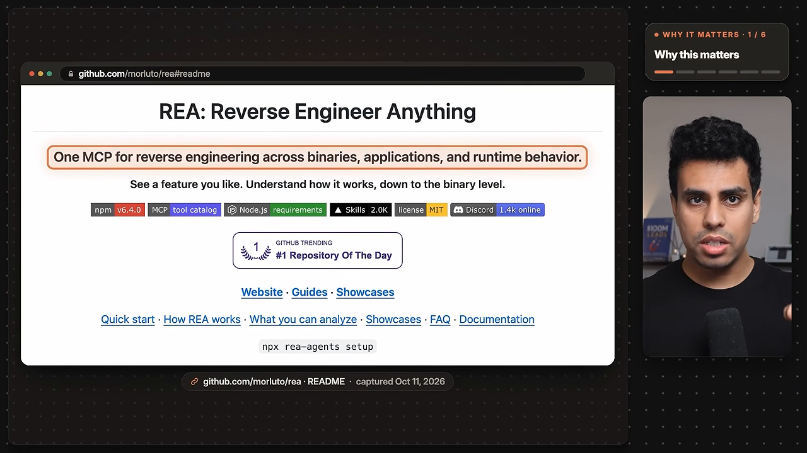
공개 저장소는 라이선스가 허락하는 범위에서 쓸 수 있어요. 비공개 저장소는 개발자가 코드를 숨겨 두고 완성품만 건네는 곳이에요. 다음 섹션이 바로 이 경우를 다뤄요.
리버스 엔지니어링, 그리고 REA가 바꾼 것
친구가 레시피 없이 케이크만 준다면 어떨까요? 맛보고, 잘라 보고, 속에 뭐가 들었는지 짐작해서 비슷하게 만들어야 해요. 슬라이드의 네 단계(Taste it, Cut it open, Work out what's inside, Make your own version)가 바로 리버스 엔지니어링의 순서예요.
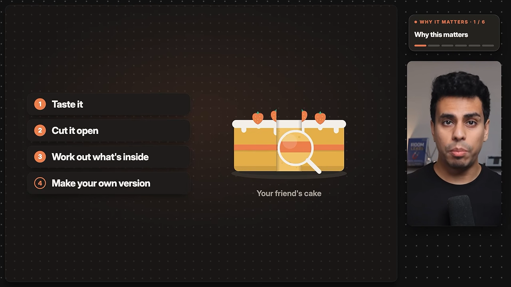
이 일을 하는 도구는 오래전부터 있었어요. 대표가 Ghidra예요. 아래 README에서 강조된 부분처럼 Ghidra는 NSA(National Security Agency) 연구 조직이 만들고 관리하는 도구로, 컴파일된 코드를 분석해요(analyze compiled code). 무료로 공개돼 있어요. 비슷한 도구로 맥용 디스어셈블러 Hopper와 Hex-Rays의 IDA Pro가 있어요.
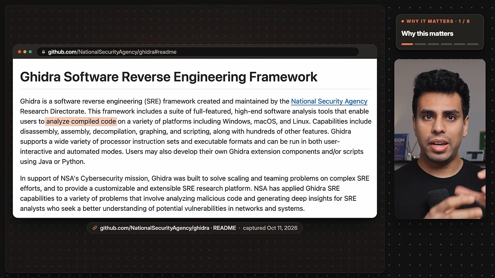
달라진 건 연결 방식이에요. 아래 슬라이드 가운데 REA 상자에 'MCP server'라고 적혀 있어요. 왼쪽의 Claude가 REA를 거쳐 오른쪽 세 도구(Ghidra, Hopper, IDA Pro)를 부리는 구조예요. 그래서 '이 기능이 어떻게 돌아가는지 알아봐 줘'라고 말하면 Claude나 ChatGPT가 REA로 조사를 돌리고, 결과를 읽고, 찾은 걸 설명해 줘요.
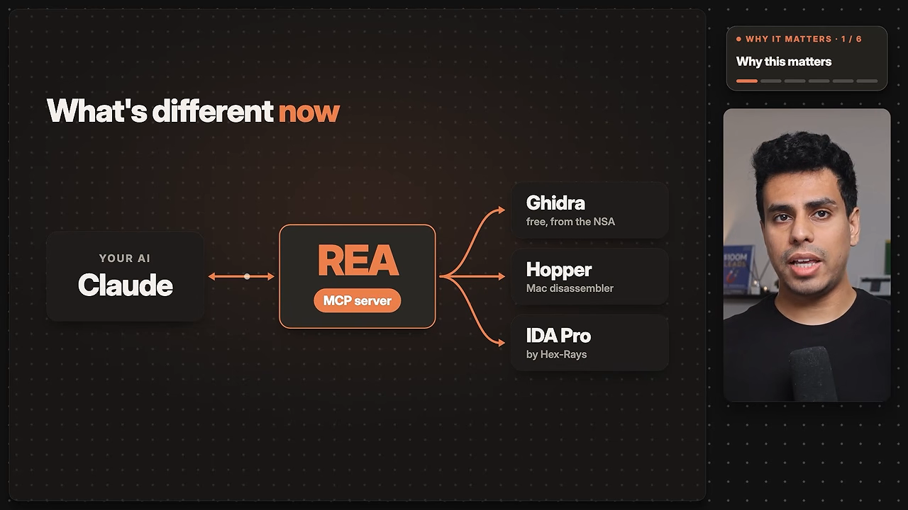
발표자는 이 변화를 전후로 비교해요. 왼쪽 “BEFORE” 칸은 도구를 깊이 아는 전문가만 할 수 있던 일(Experts only)이고, 오른쪽 NOW는 Claude가 대신 해 주는 30분짜리 대화예요. 특정 기능을 골라 조사하고, 질문하고, Claude에게 만들게 할 수 있어요.
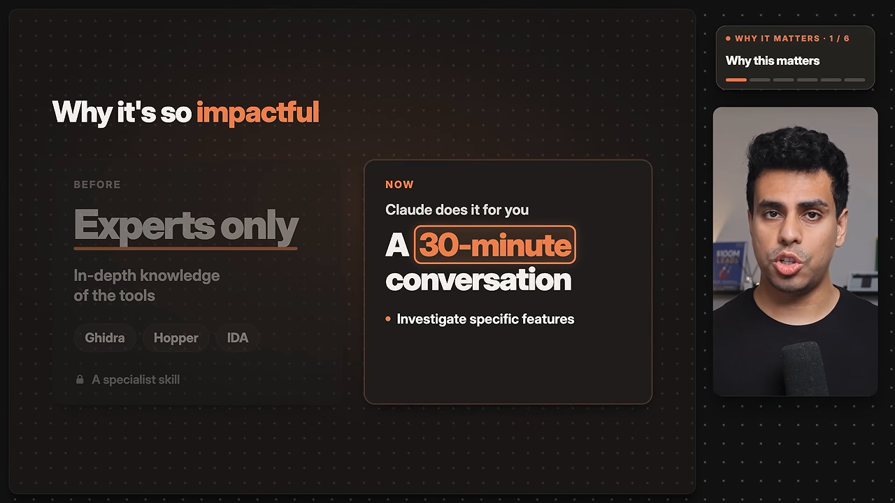
Rabbit R1을 내 비서로 다시 만들기
발표자가 먼저 보여 주는 예는 Rabbit R1이에요. 아래 슬라이드 왼쪽이 원래 판매되는 기기 사진이고, 오른쪽에 그가 원했던 것이 적혀 있어요. 컴퓨터를 조종하는 Jarvis 같은 비서로 쓰고 싶었다는 거예요(Control my computer, like Jarvis). 하드웨어는 마음에 들었지만 함께 온 소프트웨어는 마음에 들지 않았대요.
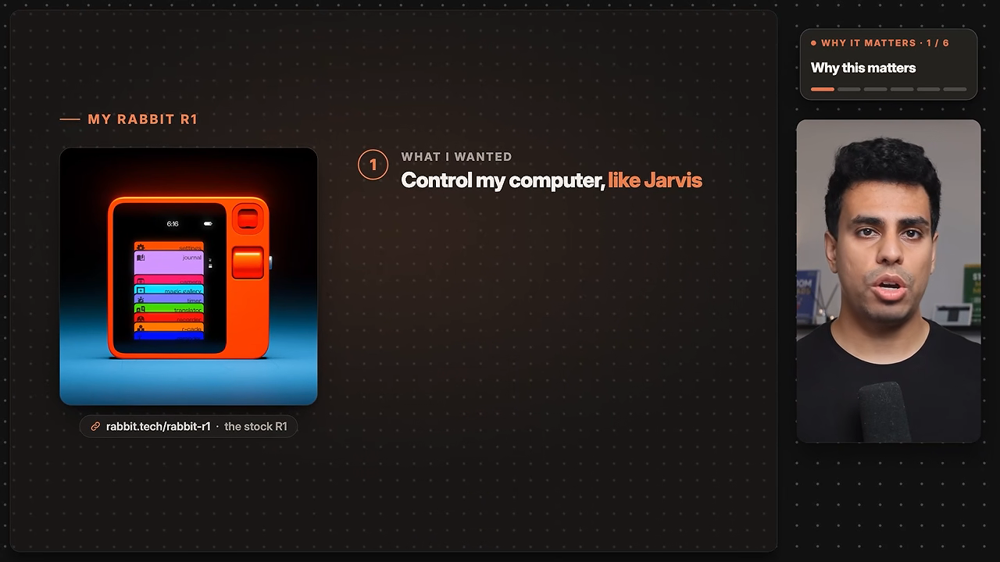
그래서 필요한 부분만 REA로 뜯어보고, 원하는 대로 운영체제를 새로 만들었어요. 화면 왼쪽 위 'My own Rabbit OS · rebuilt with REA' 목록에 세 기능이 보여요. 대화 상대 Jarvis, 그날 회의를 쌓아 둔 Meetings 카드, 그리고 진행 중인 프로젝트로 들어가 대화를 이어 가는 Coding threads예요. 밖에 있을 때 Claude Code, Codex, Hermes 작업을 한곳에서 다룰 수 있다고 해요.
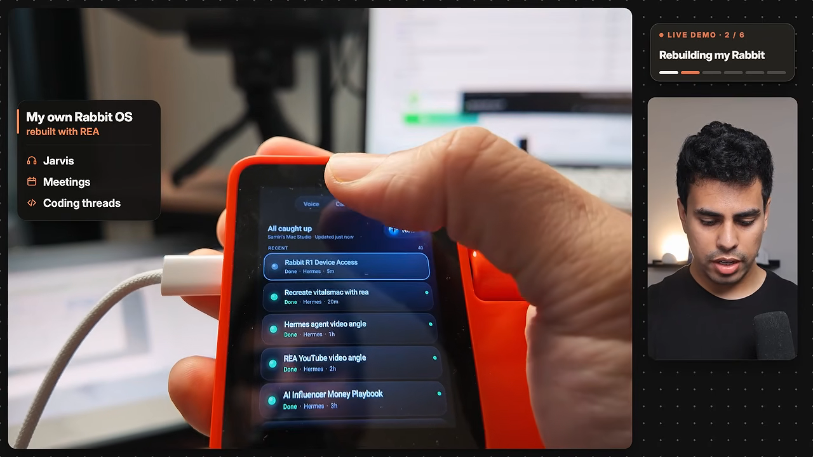
음성 데모도 이어져요. 아래 화면 왼쪽 아래 말풍선이 대화 내용이에요. 발표자가 "내 화면이 보여? 어떤 앱이 열려 있어?"라고 묻자 Jarvis가 맥에 무엇이 열려 있는지 잠깐 보겠다고 답해요. 이어서 앞에 열린 앱과 Vitals 같은 다른 창을 읽어 줘요.
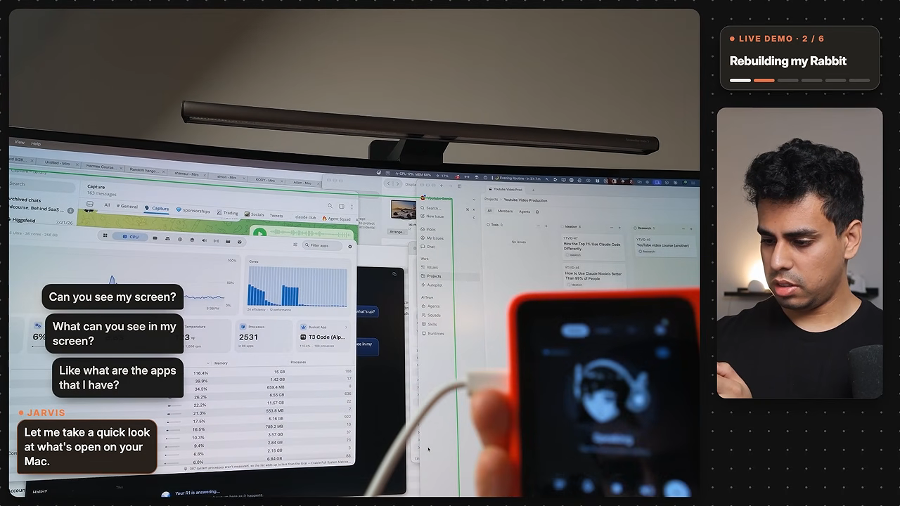
내일 첫 회의를 묻자 아침 7시 'morning check'라고 답하고, 캘린더를 띄워 달라고 하자 Chrome에 Google Calendar를 열어요. 마지막 화면 왼쪽 위 상자가 이 데모를 세 줄로 요약해요. Rabbit의 시스템을 리버스 엔지니어링했고(Reverse engineered), 코드를 처음부터 다시 썼고(Rebuilt), 그래서 내 것이 됐다는(Mine) 거예요.
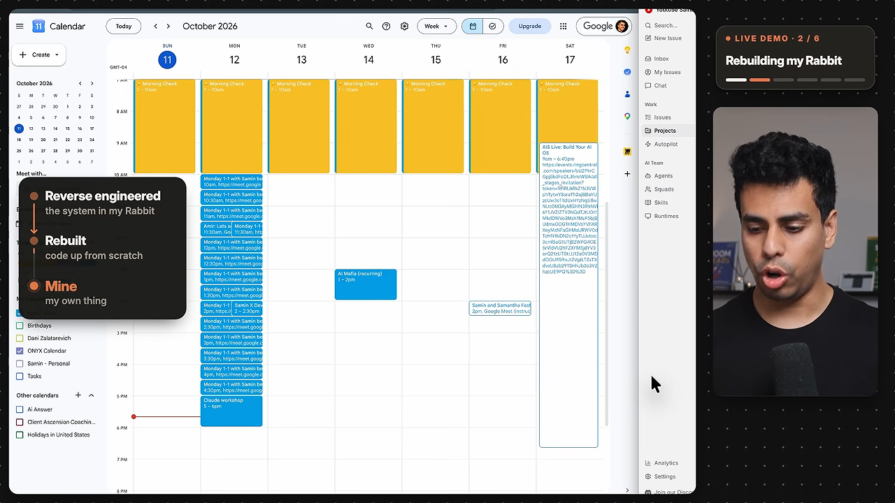
REA가 못 하는 것: 디컴파일과 클라우드의 벽
케이크 비유로 돌아가면, 맛이 아주 비슷한 케이크를 만들어도 친구의 레시피를 되찾은 건 아니에요. 앱도 마찬가지예요. 아래 슬라이드 위쪽 줄이 앱이 만들어지는 길이에요. 개발자가 쓴 소스 코드를 컴파일러가 컴퓨터가 실행할 기계어로 바꿔요. 아래쪽 화살표가 그 반대 방향, 즉 디컴파일이에요.
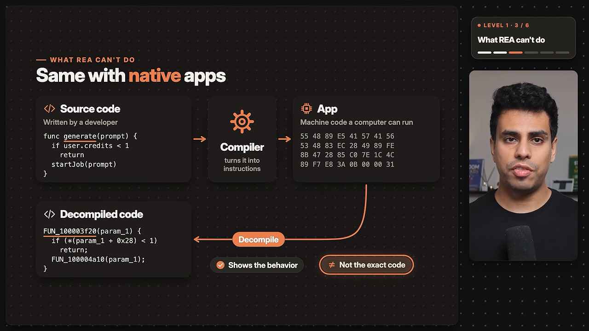
앱마다 남기는 단서도 달라요. 아래 왼쪽 JavaScript 앱은 읽을 수 있는 파일이 그대로 남아 있고, 오른쪽 네이티브 앱은 기계어 숫자만 보여요. 그래서 어떤 앱은 뜯어보기 쉽고, 어떤 앱은 어렵거나 아예 안 될 수도 있어요. 이 때문에 다시 만든 결과는 원본과 동작을 비교해서 시험하고, 새로 더한 기능은 의도대로 도는지 따로 확인해야 해요.
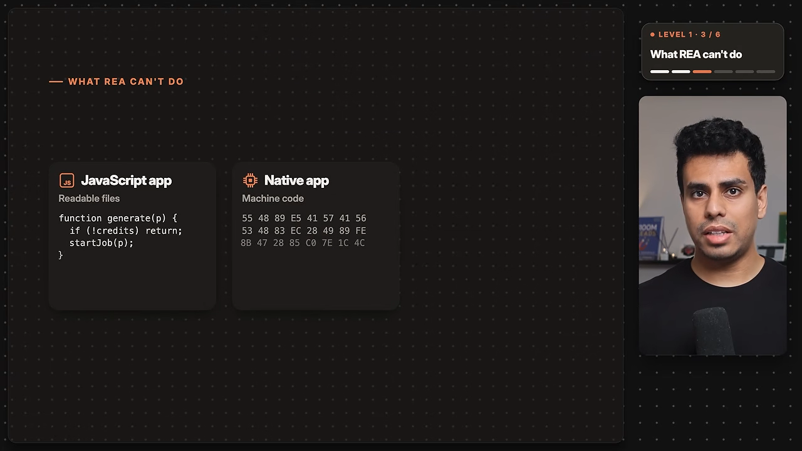
앱 하나는 여러 조각이에요
어떤 조각을 뜯어보고 다시 만들 수 있을까요? 발표자는 AI(Artificial Intelligence) 영상 생성 앱을 예로 들어요. 아래 슬라이드를 왼쪽부터 읽으면 돼요. 프롬프트를 넣는 화면이 Front end, 요청을 서비스로 보내는 통로가 API(Application Programming Interface)예요. Backend 칸의 “BUSINESS LOGIC” 아래 두 줄이 비즈니스 로직의 예예요. 크레딧이 충분한지 보고(Enough credits?), 영상 생성 작업을 시작해요(Start video job). 맨 오른쪽 Database에는 계정, 크레딧 잔액, 영상 기록이 있어요.
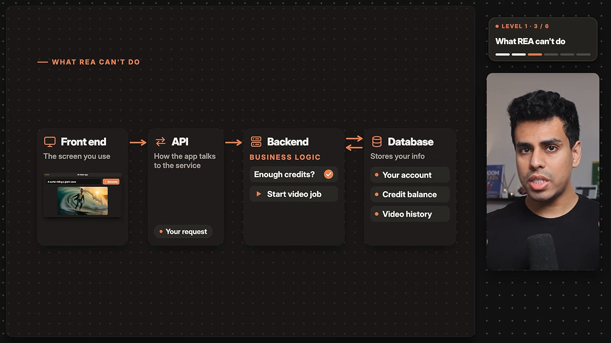
이건 클라우드에 연결된 앱의 흔한 구조예요. 반면 로직과 데이터를 기기 안에 두는 앱도 있어요. 아래 슬라이드 왼쪽 On your device 칸에 Vitals 화면이 들어가 있고 'Easy for REA' 표시가 붙어 있어요. 오른쪽 In the cloud 칸은 로직과 데이터가 회사 서버에 있는 경우예요.
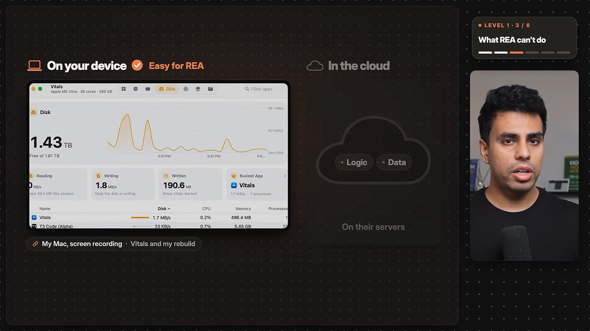
그 영상 앱을 Claude와 REA에게 맡기면 어디까지 보일까요? 아래 슬라이드에서 밝게 남은 건 Front end 하나예요(Inspectable). Cloud와 Private 표시가 붙은 점선 상자 안의 백엔드 로직, 영상 모델, 데이터베이스는 흐리게 처리돼 있어요. 생성 버튼이 무슨 요청을 보내는지는 추적할 수 있어요. 하지만 영상을 실제로 만드는 코드나 모델은 알 수 없고, 내 영상 기록을 본다고 회사 데이터베이스 전체가 보이지도 않아요. 왼쪽 아래 두 표시처럼, 배운 걸로 다시 만들 수 있는 건 화면과 그 동작이에요(Rebuild the UI(User Interface) and its behavior).
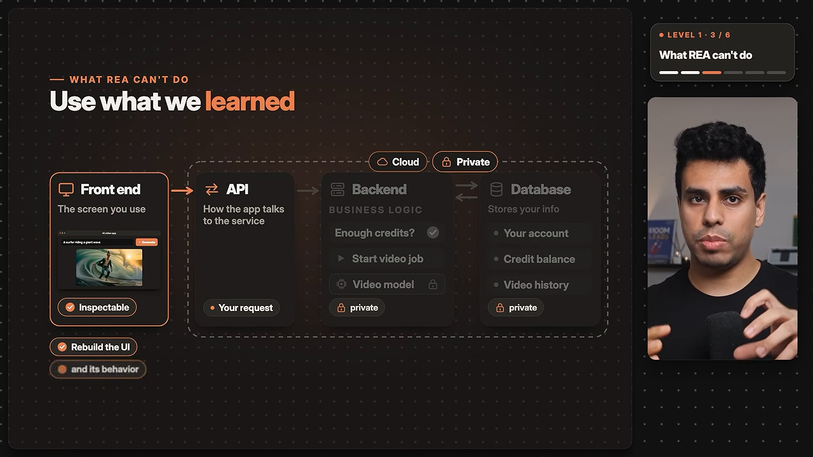
이 섹션과 다음 실습에서 발표자가 따로따로 말한 판단 순서를 한 장으로 모으면 이렇게 돼요. 갈림길은 '앱이 외부 서비스를 부르느냐' 하나예요.
flowchart TD
A["따라 만들고 싶은 앱"] --> B{"외부 서비스를 부르나요?"}
B -- "아니요, 기기 안에서 돌아요" --> C["앱 전체를 디컴파일해서
처음부터 다시 만들기"]
B -- "네, 서버에 기대요" --> D["화면과 동작만 배워서
다시 만들기"]
D --> E["백엔드·데이터베이스는 직접 만들거나
쓸 수 있는 서비스에 연결"]
C --> F["원본과 나란히 놓고 동작 시험"]
E --> F
Rabbit도 같은 방식이었어요. 기기가 원하는 대로 움직이지 않는다는 구체적인 문제가 있었고, 필요한 조각만 조사해서 자기 버전을 만들어 Jarvis에 연결했어요. 다른 사람도 같은 식으로 쓰고 싶어 한다면 이걸 묶어서 유료 제품으로 팔 수도 있다고 해요. 아래가 발표자가 권하는 접근 세 가지예요.
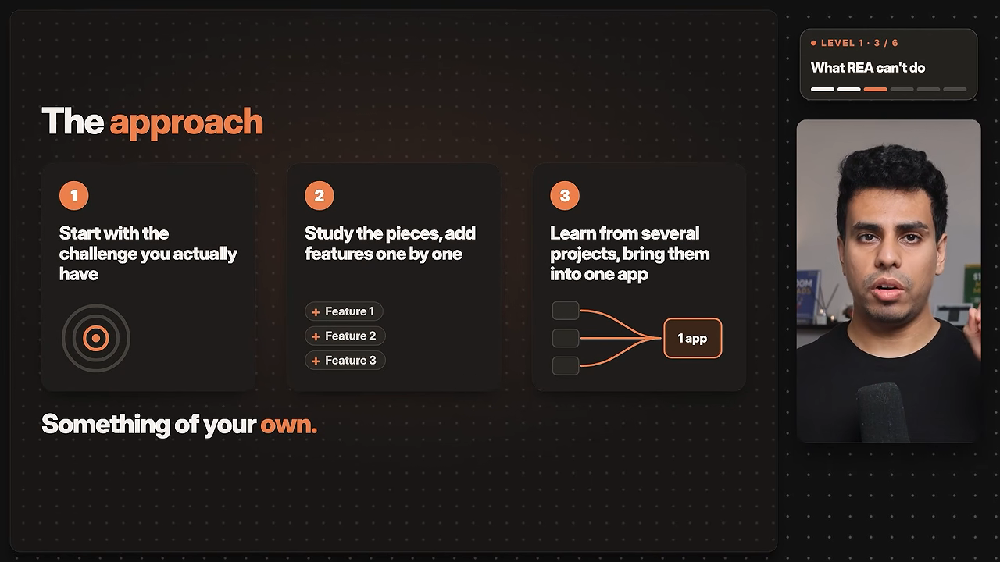
Vitals 따라 만들기 실습
이제 실제로 해 봐요. 먼저 REA 저장소 링크를 복사해요. 아래 화면 오른쪽 아래 'STEP 1 · Grab the repo link' 카드에 주소 github.com/morluto/rea와 저장소 소개 문구가 보여요. 에이전트로 앱의 동작부터 네이티브 바이너리까지 뜯어본다는 내용이에요.
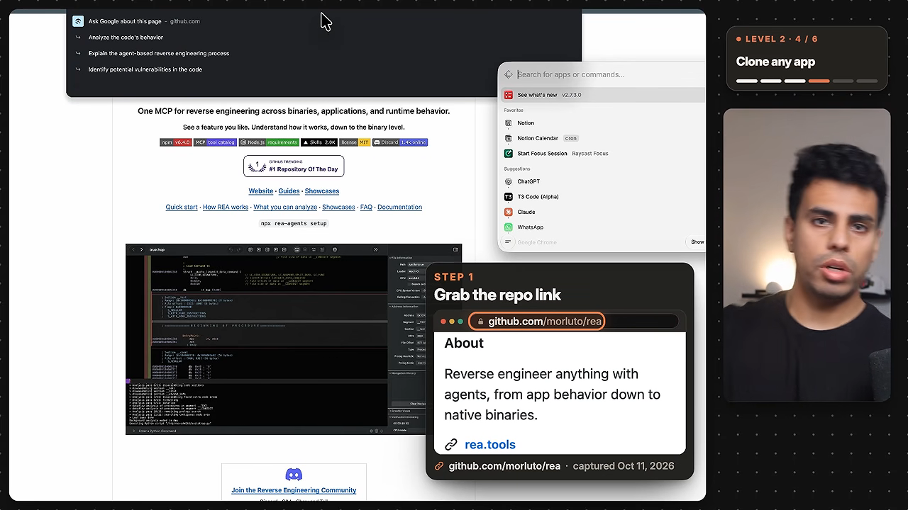
다음으로 Claude 데스크톱 앱(또는 ChatGPT)을 받아요. 발표자가 거듭 강조하는 점은 일반 채팅으로는 안 된다는 거예요. Claude Code를 열어야 해요. 모델은 Opus를 골라요. 아래 화면 아래쪽 입력창에 저장소 링크가 붙어 있고, 오른쪽 위 'STEP 5 · Paste, then ask' 카드가 함께 보낸 부탁이에요. "이걸 설치하고 내 컴퓨터의 Vitals 앱을 복제해 줘." 가운데 작은 창은 REA 빠른 시작 안내로, Node.js와 npm이 있으면 npx rea-agents setup을 실행하라고 적혀 있어요.
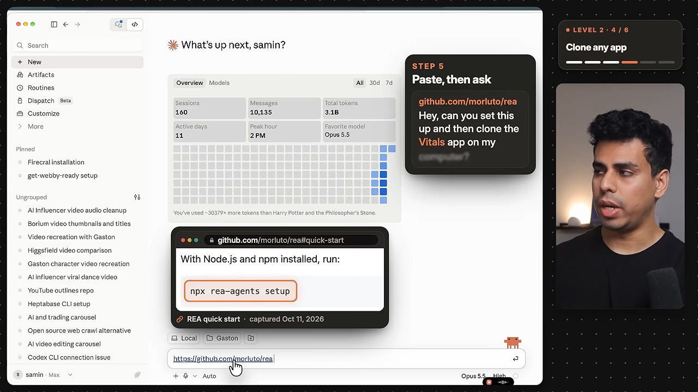
Vitals는 CPU 등을 보여 주고, 어떤 앱이 메모리를 많이 먹는지 알려 주는 맥 상태 모니터예요. 발표자는 Claude에게 이 앱 전체를 다시 만드는 걸 목표로 잡으라고 해요. 시작 전에 확인할 건 하나예요. 아래 화면 “BEFORE YOU CLONE” 카드의 질문, 앱이 외부 서비스를 부르느냐예요. Vitals는 'On-device', 즉 맥 안에서만 도는 앱이라는 게 확인됐어요.
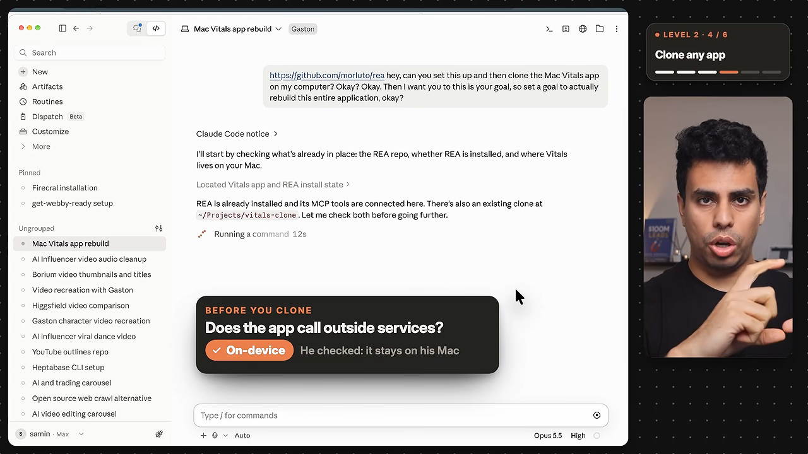
Claude Code는 먼저 REA 저장소와 설치 상태를 확인하고 작업을 이어 가요. 화면 아래 세 칸이 작업 흐름이에요. 배포된 Vitals.app을 디컴파일해서 작동 방식을 보고(Decompile), 처음부터 다시 만들어요(Rebuild from scratch).
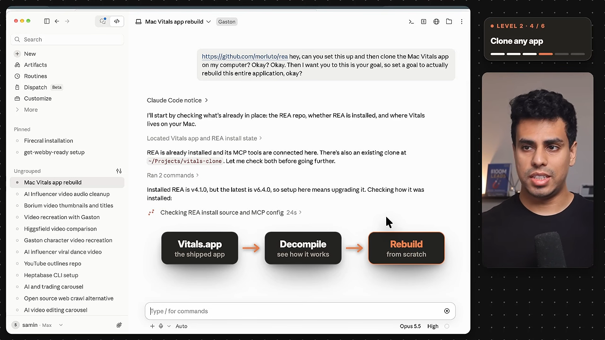
끝나고 나서 두 버전을 나란히 띄워요. 왼쪽 위 'Original' 표시가 원본, 오른쪽 'Clone'이 복제본이에요. 카드 배치와 색이 조금 다르지만 발표자는 그래도 괜찮다고 해요. 원본으로 하던 일을 복제본으로 모두 할 수 있다는 거예요.
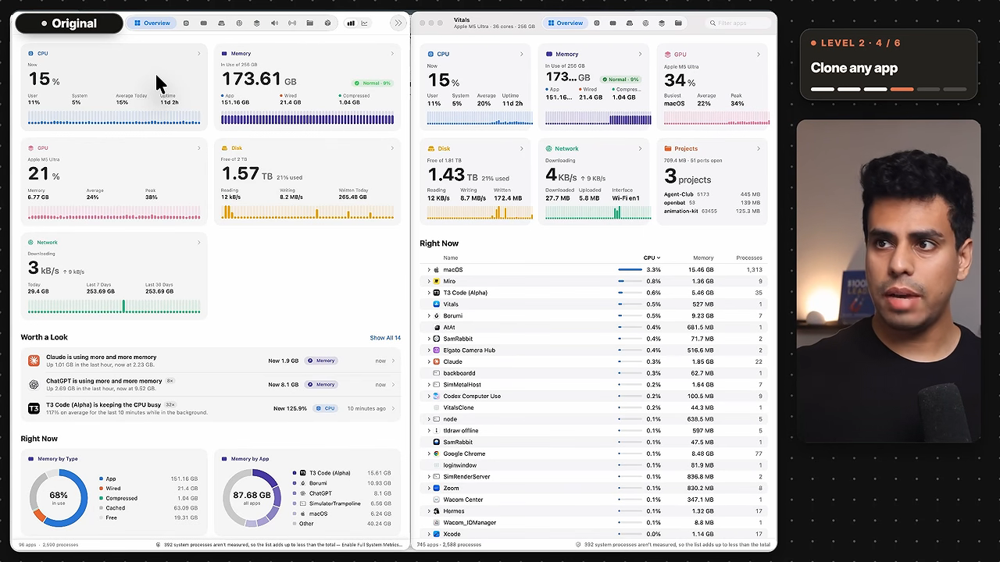
발표자는 이걸 GitHub 공개 저장소 vitals-clone으로도 올렸어요. README 첫 문단을 보면 Vitals를 본뜬 SwiftUI 메뉴 막대 앱이고, 배포된 앱을 REA로 정적 분석해 다시 만들었으며 원본 소스 코드는 쓰지 않았다고 적혀 있어요. 오른쪽 아래 'HONEST NOTE' 카드는 편집으로 넣은 경고예요. Vitals에는 무료 체험이 없고 14일 환불만 있으니, 복제본을 공유하기 전에 라이선스를 확인하라는 내용이에요.
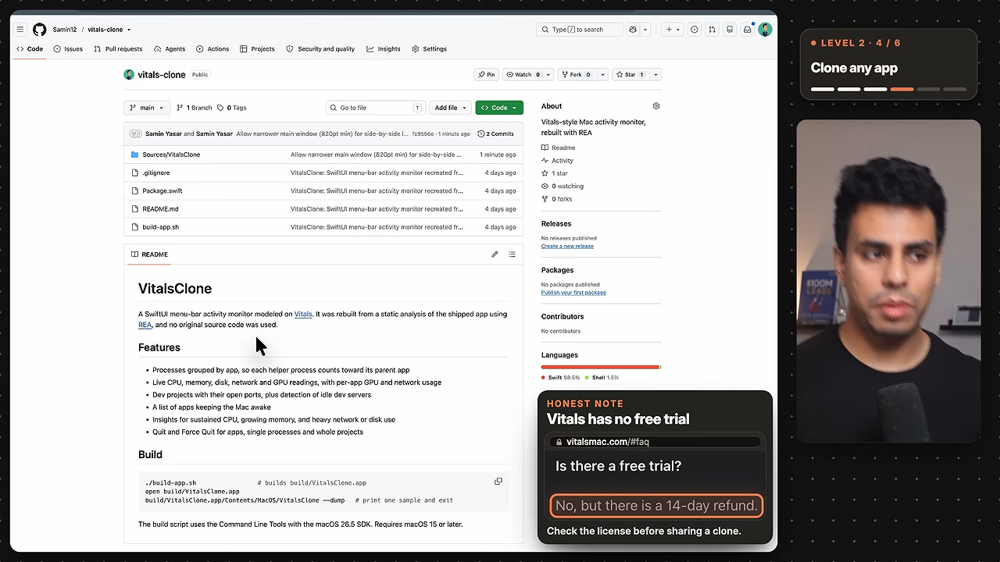
발표자는 지금까지 한 일을 화면 아래 네 단계로 정리해요. 15달러짜리 앱을 받고, 리버스 엔지니어링하고, 우리 코드를 갖고, 누구나 쓸 수 있게 공개했다는 거예요. 걸린 시간은 30분이라고 해요.
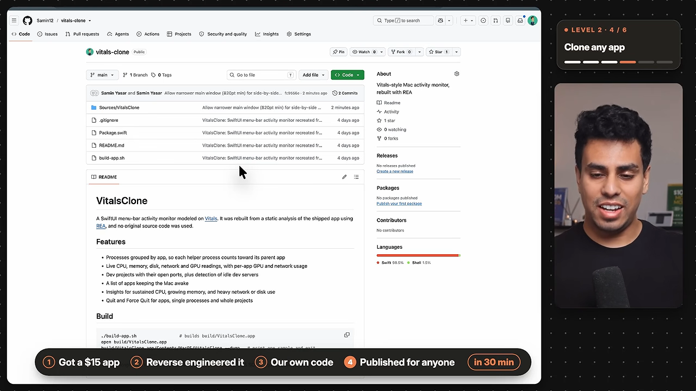
내 버전 팔기, 그리고 ArtCraft
레벨 3은 만든 걸 파는 단계예요. 발표자는 Polar라는 서비스로 비공개 GitHub 저장소 접근 권한을 자동으로 팔 수 있다고 소개해요. 아래 화면 오른쪽 'SELL YOUR VERSION' 카드가 그 흐름이에요. 만들고 고치고 자기 색을 더한 코드를 GitHub 비공개 저장소에 두고(Your repo), Polar로 유료 접근을 열면 산 사람이 자동으로 초대돼요. 발표자는 코드 전체를 팔라고 권해요. 사는 사람의 시간을 줄여 주기 때문이래요.
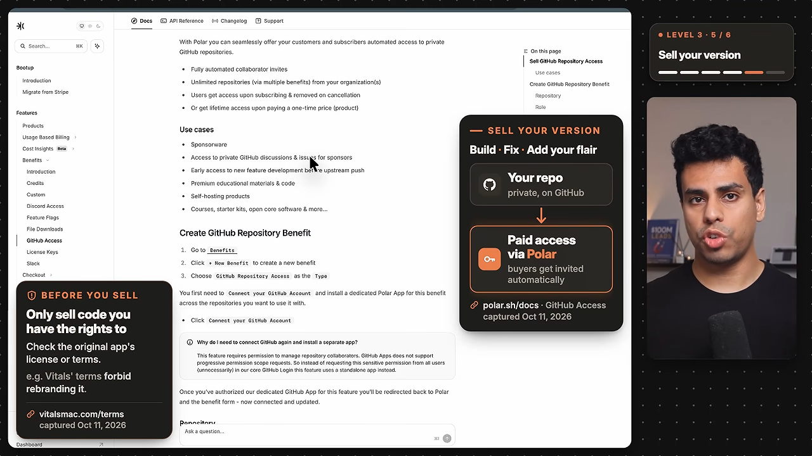
그 경고는 이래요. 권리가 있는 코드만 팔고, 원본 앱의 라이선스나 약관을 확인하라는 거예요. 예로 든 게 바로 Vitals예요. 아래 화면 아래쪽에 Vitals 약관 문장이 그대로 떠 있어요. 라이선스는 사용자의 것이지만 소프트웨어는 회사의 것이고, 되팔거나 재배포하거나 Vitals를 자기 제품으로 리브랜딩해선 안 된다는 내용이에요.
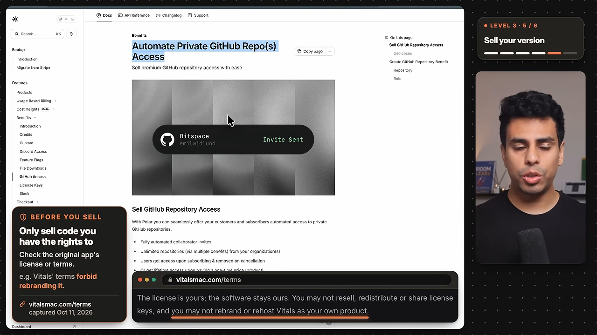
매일 쓰는 앱에서 출발해요
무엇을 만들지는 응용 프로그램 폴더를 열어 보면 보인다고 해요. 사진 편집기, 청구서 보내는 도구, 기기에 딸려 온 앱처럼 매일 쓰는 것들이요. 아래 화면에서 Device App 아이콘 옆 '+1 feature?' 말풍선이 그 질문이에요. '좋긴 한데 이거 하나만 더 있었으면' 싶은 앱이 출발점이에요.
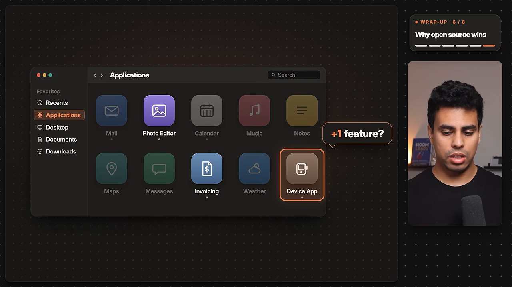
더 큰 목표라면: ArtCraft
목표가 더 크다면 한 분야 전체에 도전할 수도 있어요. 발표자가 든 예는 ArtCraft예요. 말로는 'Adobe 제품군 전체를 리버스 엔지니어링해서 오픈소스로 만들었다'고 하지만, 화면에 띄운 기사 제목은 조금 달라요. 'Adobe 앱 7개를 클린룸 방식으로 다시 만든 오픈소스, 초기 알파'예요. 강조된 문장에 따르면 소프트웨어 엔지니어 Brandon Thomas가 Photoshop, Illustrator, Premiere, Lightroom, Acrobat, After Effects, InDesign의 무료 오픈소스 대안을 냈고, Rust로 만들었어요.
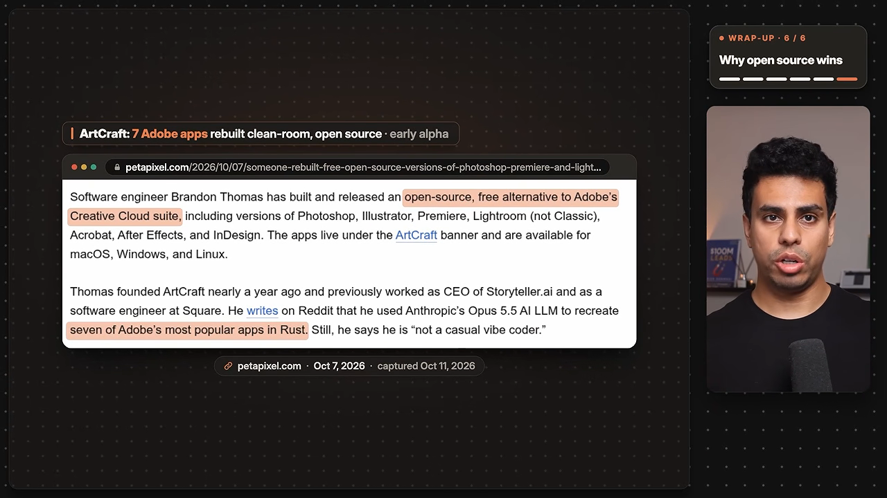
얼마나 큰 시장인지 보여 주려고 발표자는 Adobe 매출을 꺼내요. 말로는 '작년 230억 달러'라고 하는데, 화면에 띄운 Adobe 실적 자료에는 2025 회계연도 매출 237.7억 달러(23.77B)가 적혀 있어요.
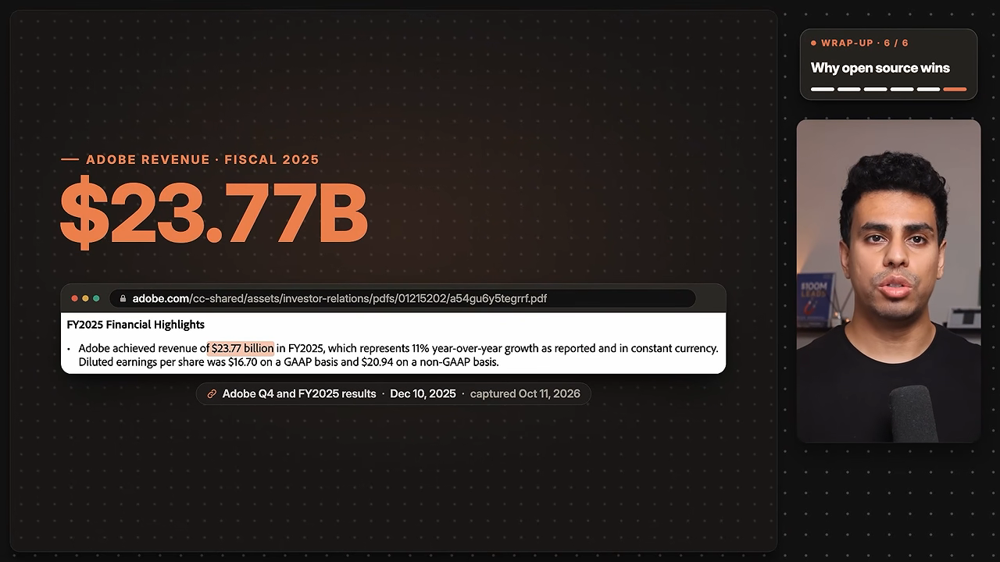
아래 슬라이드는 Adobe 앱과 ArtCraft 앱을 위아래로 짝지어요. Photoshop은 PhotoCraft, Illustrator는 VectorCraft, Premiere는 FilmCraft, Lightroom은 LightCraft, Acrobat은 PdfCraft예요. After Effects와 InDesign 아래는 비어 있어요.
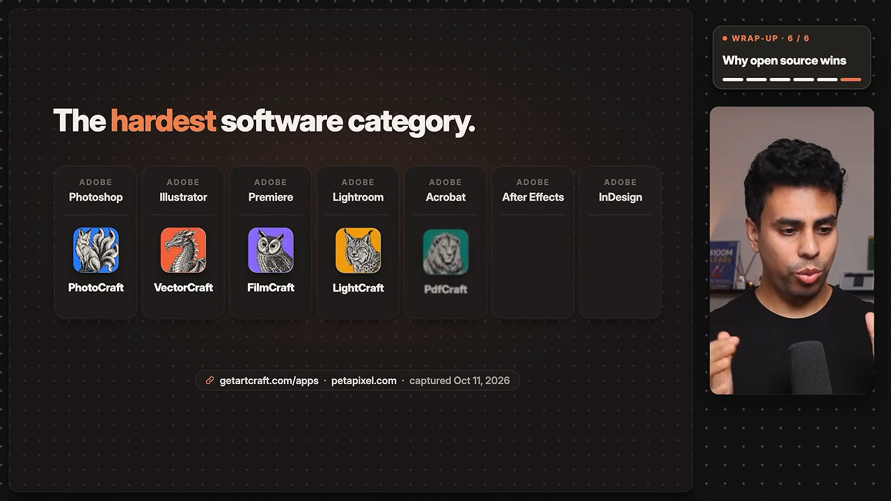
완벽한 대체품이냐는 질문에는 발표자 스스로 아니라고 답해요. 아래 PhotoCraft README 캡처의 밑줄 친 문장이 근거예요. 초기 알파 단계이고, 아직 매일 쓰는 전문가용 Photoshop 대체품은 아니라고 적혀 있어요. 그래도 몇 년 전이라면 한 분야 전체의 오픈 대안은 말도 안 되는 소리였을 텐데, 지금은 매일 누군가 만들고 있다는 게 발표자의 요점이에요.
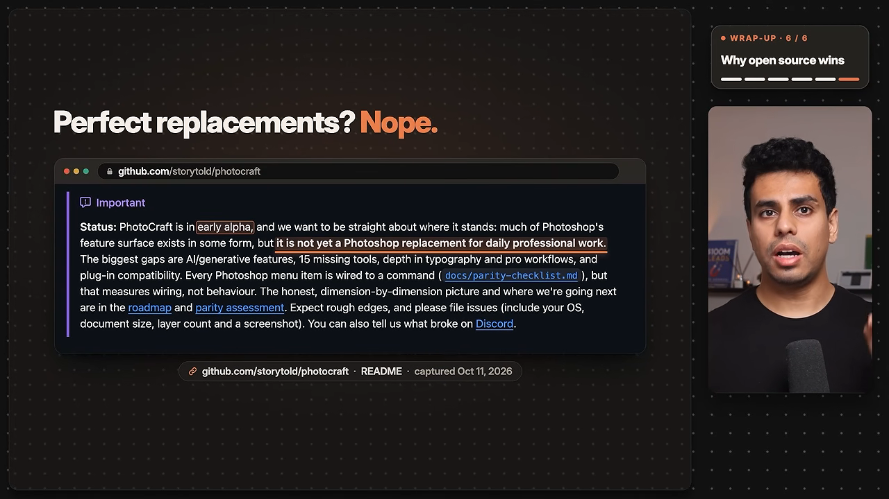
오픈소스가 다시 강해진 이유와 첫 빌드 다섯 단계
발표자는 다시 한 번 선을 그어요. REA의 가장 좋은 쓰임새는 앱 전체를 다시 만드는 게 아니에요. 아래 슬라이드처럼 앱 하나에는 편집, 필터, 내보내기, 레이어, 동기화, 공유 같은 기능이 여럿 있어요. 그중 내가 원하는 기능 하나를 REA로 이해하고, 내 컴퓨터에서 도는 걸 만드는 게 핵심이에요.
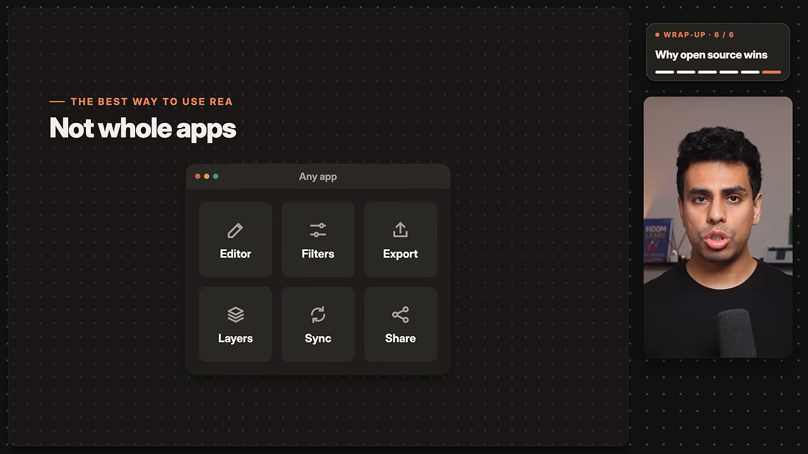
그래서 발표자는 계속 오픈소스로 돌아온다고 해요. 필요한 것의 80%를 해 주는 사진 도구를 찾았는데 라이선스가 수정과 재배포를 허락한다고 해 봐요. 그럼 처음부터 만들 필요 없이 나나 내 틈새 시장에 필요한 20%만 만들어 팔면 돼요. 아래 화면이 그런 라이선스의 예인 MIT(Massachusetts Institute of Technology) 라이선스 전문이에요. 강조된 단어 modify, distribute, sell copies가 고치고, 나누고, 팔 수 있다는 부분이에요. 맨 아래 작은 줄은 GIMP(GNU Image Manipulation Program)처럼 GPL(GNU General Public License)을 쓰면 판매는 되지만 소스도 공개해야 한다고 덧붙여요.
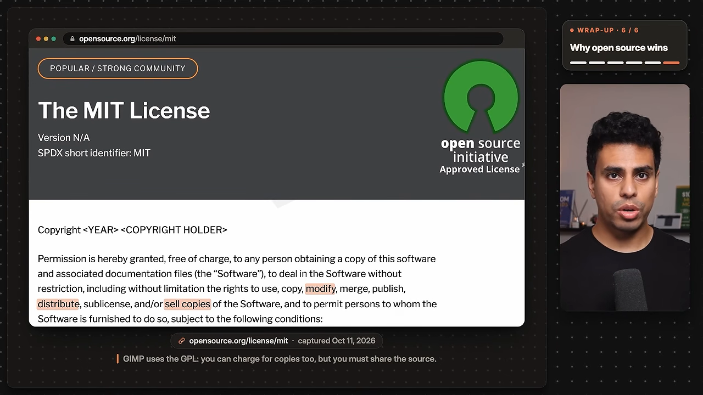
AI는 무엇을 어떻게 바꿔야 하는지 이해하도록 도와주고, 내가 개선한 결과는 다음 사람의 출발점이 돼요. 그러면서 발표자는 앞으로 오래 살아남는 쪽이 인프라 회사라고 봐요. 아래 슬라이드 위쪽 줄이 구독해서 쓰는 앱들이고, 이건 점점 베끼기 쉬워져요(Apps get easier to copy). 아래쪽 줄이 모든 앱이 기대는 서버, 데이터베이스, API, 결제예요. 큰 회사를 세우고 싶다면 이쪽이 자리라고 해요.
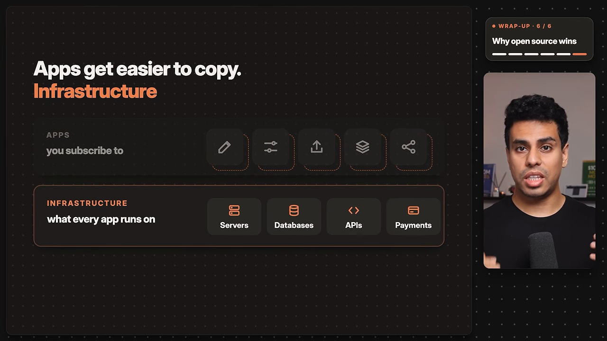
그래도 오픈소스는 훨씬 강해졌다고 해요. 더 많은 사람이 접근해서 그 위에 쌓을 수 있게 됐으니까요. 역할도 나뉘어요. 아래 슬라이드 왼쪽처럼 코드는 AI가 쓰고(Writes the code), 오른쪽처럼 그게 정말 쓸모 있는지는 사람의 판단과 취향이 정해요(Judgment & taste).
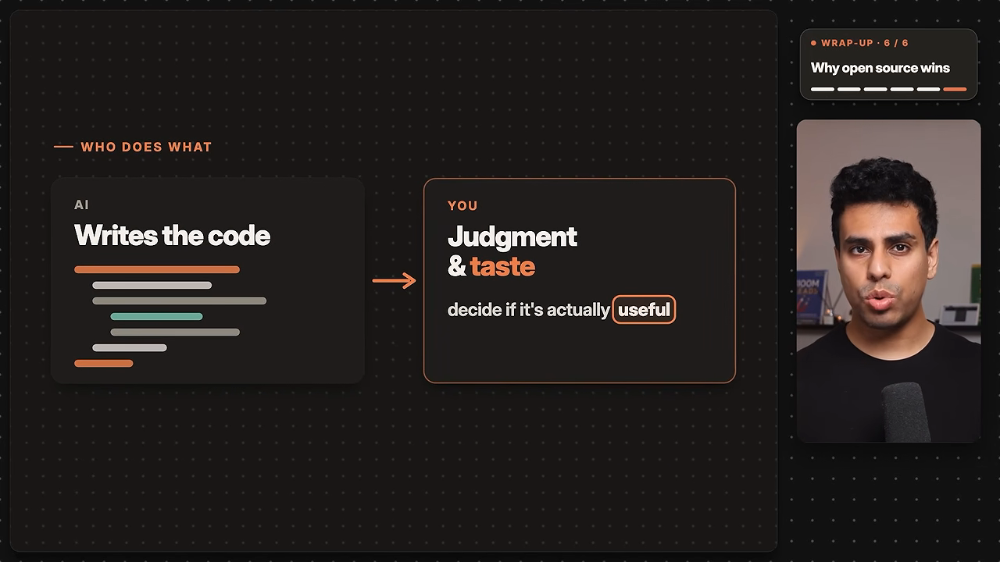
발표자가 앞에서 개념을 길게 설명한 이유가 여기 있어요. 아래 슬라이드가 영상에 나온 개념 세 줄을 다시 모아요. 소스 코드→컴파일러→앱, 프론트엔드→API→백엔드→데이터베이스, 그리고 Claude↔REA(MCP)↔Ghidra·Hopper·IDA예요. 조각들이 어떻게 이어지는지 알면 원하는 건 무엇이든 만들 수 있다는 게 발표자의 말이에요.
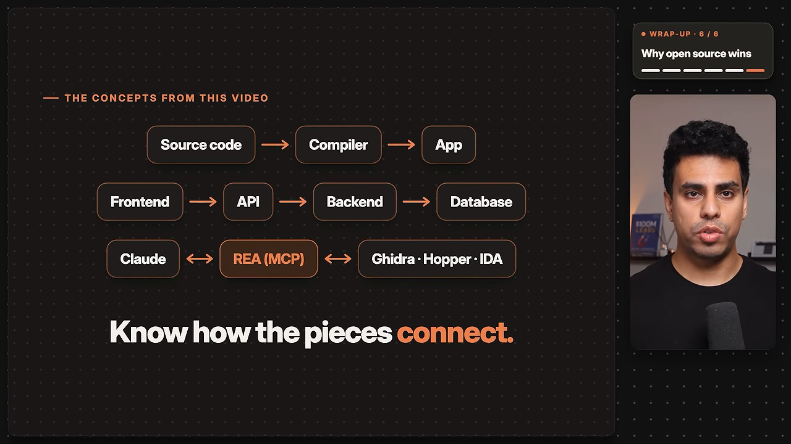
첫 빌드 다섯 단계
마지막으로 발표자는 바로 해 볼 순서를 다섯 개로 줘요. 아래 슬라이드 첫 줄 밑의 작은 글씨가 첫 단계의 뜻을 풀어요. 리버스 엔지니어링해서 그 소프트웨어에 덧붙인다는 거예요.
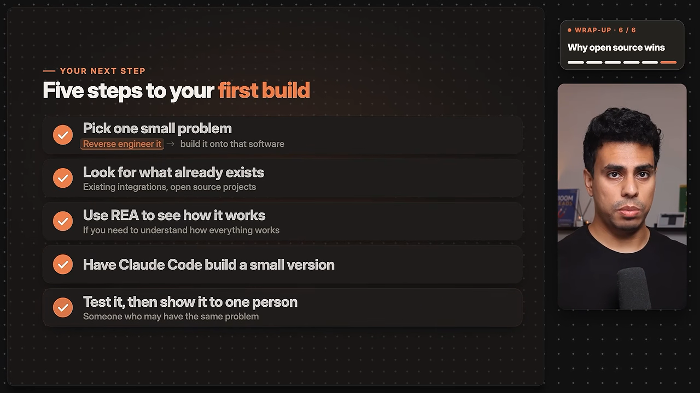
- 작은 문제 하나를 골라요 — 매일 쓰는 앱에서 '기능 하나만 더 있었으면' 싶은 곳이요.
- 이미 있는 걸 먼저 찾아요 — 기존 통합 기능이나 다른 오픈소스 프로젝트요.
- 작동 원리를 알아야 할 때 REA를 써요
- Claude Code로 작은 버전을 만들어요
- 시험해 보고, 같은 문제를 가진 한 사람에게 보여 줘요
발표자의 전망으로 영상이 끝나요. 수십 년 동안 소프트웨어는 수백만 명을 한꺼번에 겨냥해 만들어져서 누구에게도 꼭 맞지 않았어요. 앞으로는 한 사람, 한 회사, 한 워크플로를 위한 소프트웨어가 훨씬 많아질 거래요. 10억 달러짜리 회사를 다시 만들 필요는 없고, 내 소프트웨어가 해 줬으면 하는 일 하나에서 시작하면 된다는 말로 마무리해요.